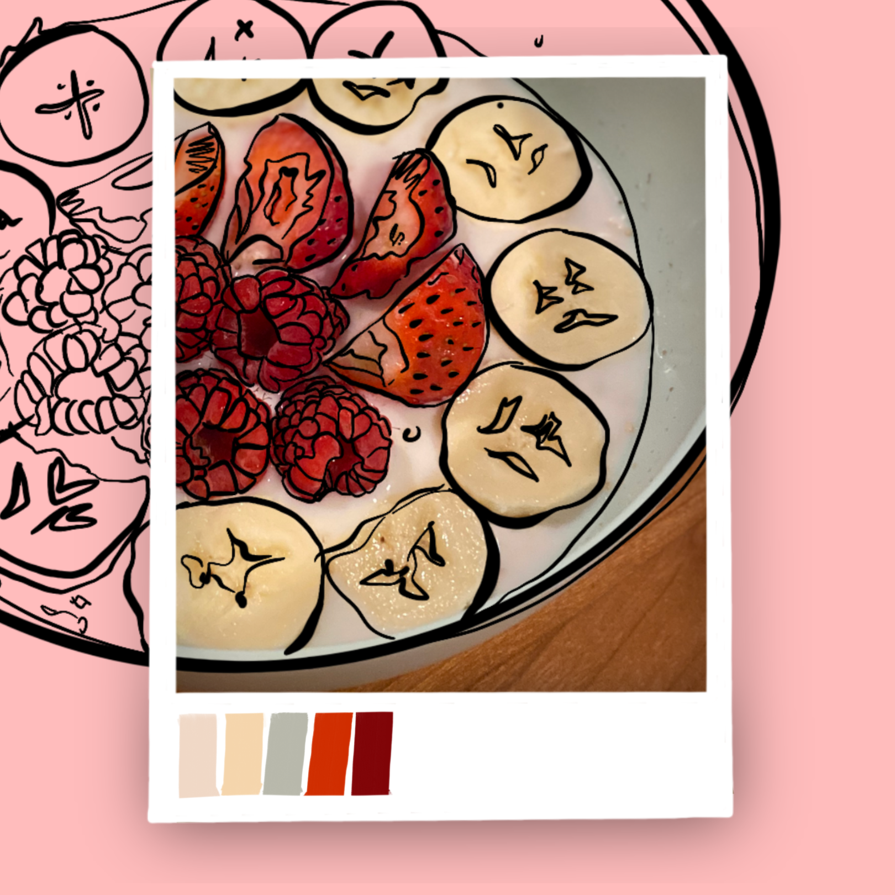

"soaked overnight and adorned with berries and banana slices, where creamy indulgence meets fruity exuberance"

when it happened: march 4, 2023
where it happened: my apartment in bangalore, india
Overnight oats was just something my friends and constantly heard our other friend babble on about. She always talked about how amazing of a breakfast choice it is. We didn’t try it for a long time because one; it just looked like porridge and two; it sounded healthy. However, due to her persistence, she made the oats for us one day and it was unexpectedly really good. We probably had it twice after and that was it. After coming to New York, I had to cook and overnight oats was the easy way out; at least for breakfast. Little did I know it would become a fulfilling, scrumptious meal that I routinely have once a week. Also, adding the peanut butter and yogurt was a decision I took only after coming to New York because I wanted more protein in my meals. I also happened to get my current roommate and my parents hooked on to it. Trust me, it’s really good.
Memory highlights:
The first time we had the oats was for a Sunday brunch. We were lazy, the cook didn’t come in and we were really hungry. I’d say we picked the right day to try it. After taking out the overnight soaked oats, I’ll be honest, it wasn’t too appealing – but don’t let looks deceive you because it looks more appetising with the fruits. Later, we topped it with a few fresh baby bananas and an apple. Surprisingly though, I was barely able to finish like half a cup and my friend easily downed almost an entire cup. I did not understand how that happened because we have the same appetite. But I realised that the more you have it, the larger your ‘oats’ appetite becomes because now, I have an entire cup of oats with a huge banana and a couple strawberries and I could still have space for some more. Yeah, you’ll be surprised. I was so fascinated by it, I would decorate my bowl with different fruits each time and send pictures of it to my friend.